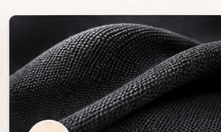
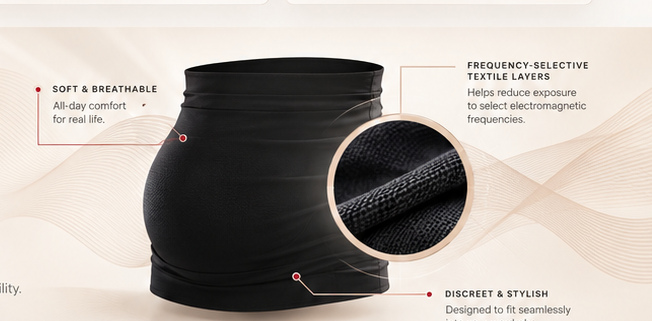

Comfort First
Ultra-soft, breathable, and designed to move with you through every stage.
A new approach to maternity wear, bringing advanced frequency-selective textile engineering into a comfortable, thoughtfully designed wrap for modern motherhood.
Ultra-soft, breathable, and designed to move with you through every stage.

Advanced frequency-selective textile engineering, thoughtfully built for everyday wear.
A modern approach to maternal wellness — because your peace of mind matters.
Our patented, frequency-selective textile technology helps reduce exposure to certain electromagnetic frequencies — without sacrificing comfort, style, or mobility.
Explore the Technology
At TekStyle, we combine scientific research, innovative materials, and maternal insight to create a new category of maternity wear.
Our Scientific ApproachFrequency-selective surfaces are engineered structures that can reflect or transmit electromagnetic waves differently at different frequencies. The illustration above describes the design concept; a garment's performance and any health benefit require separate validation.
Yale University: 2012 mouse study — findings in mice do not establish outcomes in humans.
TekStyle brings together electromagnetic engineering research and thoughtful maternity garment design.
No such claim is established. Frequency-selective structures are designed to interact with particular frequencies, and garment-specific test data are required to determine their performance.
No clinical benefit is established here. Electromagnetic material performance and clinical health outcomes are different questions.
Interested in product updates or partnership opportunities?
Receive product availability and research updates.
Thank you for your interest. Contact-form delivery is not configured yet; no details were stored or sent.